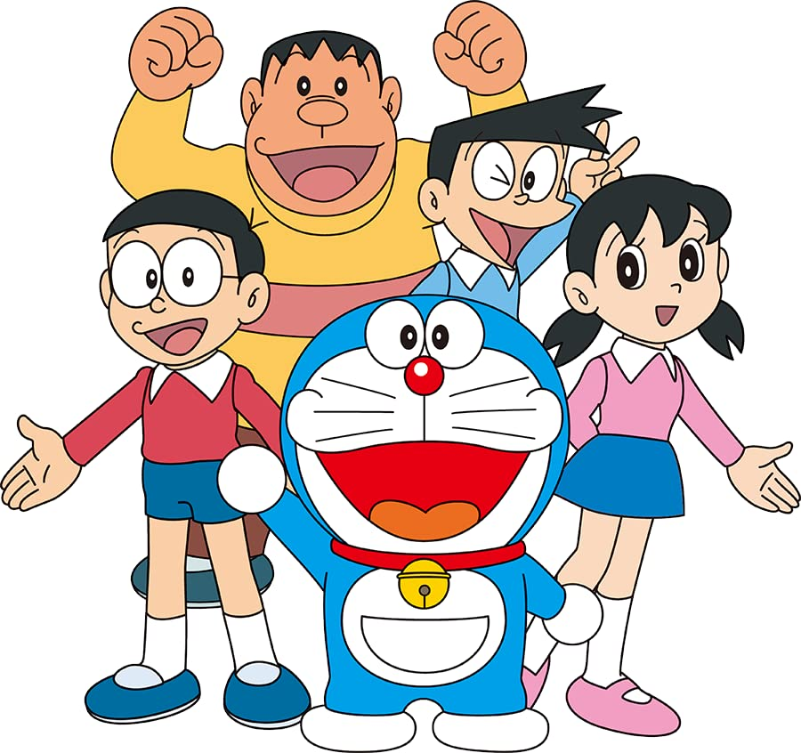
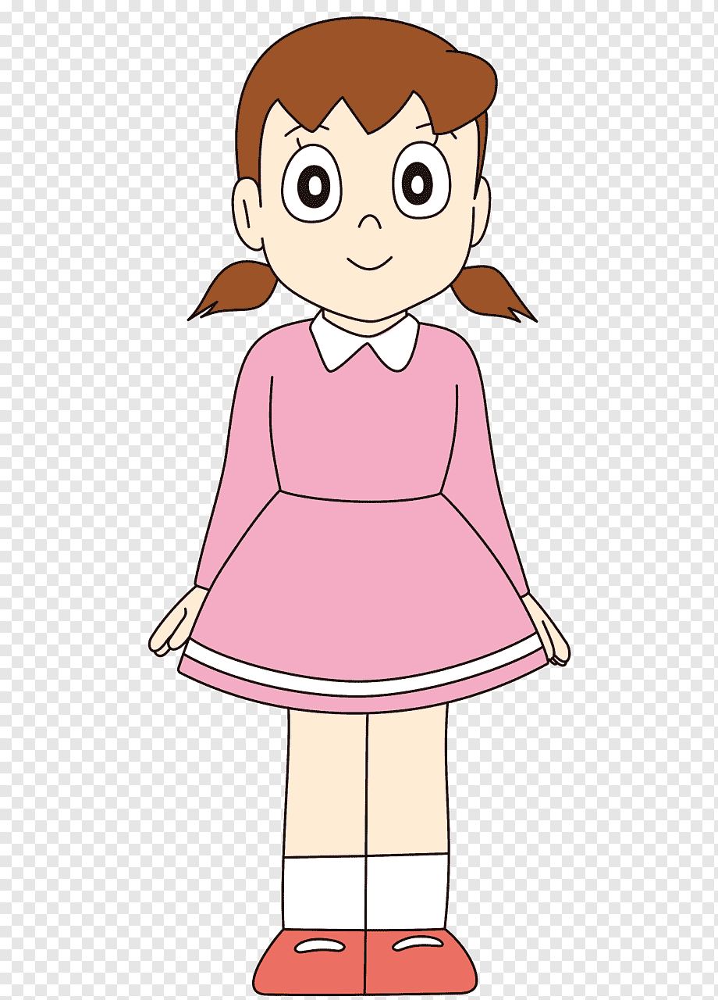
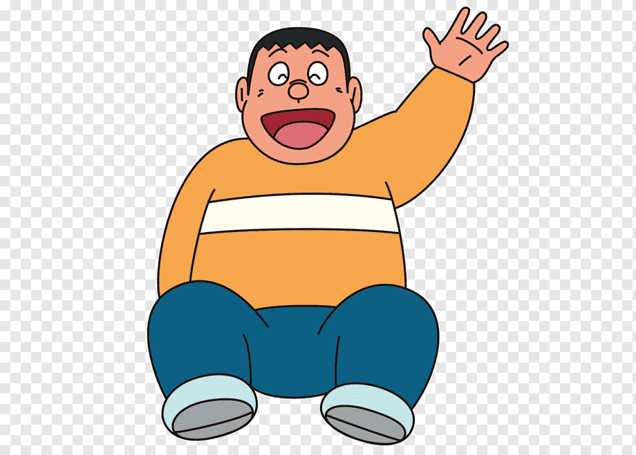

All Info
List of Characters
In Alphabietical order
- Doremon
- Nobita
- Shizuka
- Sunio
- Gian
In Numerical order that starts from 5
- Doremon
- Nobita
- Shizuka
- Sunio
- Gian
In bold Square Bullet Points
- Doremon
- Nobita
- Shizuka
- Sunio
- Gian

Doraemon (ドラえもん) is a Japanese manga and anime series and franchise about the character Doraemon. It was written and illustrated by Fujiko Fujio. It was started in a children’s magazine in 1969. Doraemon is the name of a robot cat that came from the future to help a boy named Nobita Nobi. Doraemon is about the life of Nobita Nobi. In a typical story Doramon uses a gadget to solve a problem for Nobita, but Nobita goes too far and ends up being punished and learning a lesson.
Doraemon was turned into an anime television show in 1973. It still is being shown on television. As of 1996, about 100 million comic books have been sold. A Japanese-to-English version of the original called Doraemon: Gadget Cat from the Future was published from 2002. A local translation is published in each Asian country such as Hong Kong, Taiwan, Korea and Vietnam. It is in the United States, Canada, the United Kingdom, and Australia, but it is not as popular as it is in Asia. Doraemon is endorsed by 7-11 in Thailand as a mascot.
Doremon Info

Doraemon is a male robotic earless cat that travels back in time from the 22nd century to aid a preteen boy named Nobita.
Birthday : September 3, 2112
Created by : Fujiko F. Fujio
First appearance: 1 December 1969; Magazine Shogaku Yo-nensei; Doraemon (1973 TV series)
Hometown: Tokyo
Species: Robot cat
Back to Top
Nobita Info

Nobita's characterization depicts him as a lazy and flawed person, including but not limited to a lack of physical co-ordination or athletic talent, predisposition to laziness, reluctance to engage in critical thinking, and sometimes exhibits childish or even perverted behavior.
Nickname:Noby (Bang Zoom! English dub)
Gender :Male
Significant other :Shizuka Minamoto (future wife and girlfriend)
Nationality :Japanese
Age :10
Birthday :August 7, 1961 (1969)
Back to Top
Shizuka Info

Shizuka is a kind, gentle-hearted girl who is known for her beauty, intelligence, and her skills in singing, drawing, and dancing.
Full Name :Shizuka Minamoto
Nationality :Japanese
Age :9 (1973) 10 (1979 and 2005)
Birthday :May 8, 1962 (1969) May 8, 1965 (1973) May 8, 1974 (1979) May 8, 2000 (2005)
Hometown :Tokyo
Back to Top
Sunio Info

He is a spoiled rich kid who likes to show off his cool stuff to his friends and make them jealous. The friends he hangs out with mostly are Nobita, Doraemon, Gian and Shizuka. He sometimes brags to his friends to things like meeting up with famous stars.
Full Name :Sunio Honekawa
Nationality :Japanese
Age :9 (1973) 10 (1979 and 2005)
Birthday :May 8, 1962 (1969) May 8, 1965 (1973) May 8, 1974 (1979) May 8, 2000 (2005)
Hometown :Tokyo
Back to Top
Gian Info

Personality. Gian is known for his overconfidence in his terrible singing and cooking skills, of which he constantly abuses to torture his surroundings, as he was never aware of these flaws. He is tone deaf to the horrendous singing as shown in some episodes where he sing and totally unaffected by it.
Full Name :Gian Goda
Nationality :Japanese
Age :9 (1973) 10 (1979 and 2005)
Birthday :May 8, 1962 (1969) May 8, 1965 (1973) May 8, 1974 (1979) May 8, 2000 (2005)
Hometown :Tokyo
Back to Top